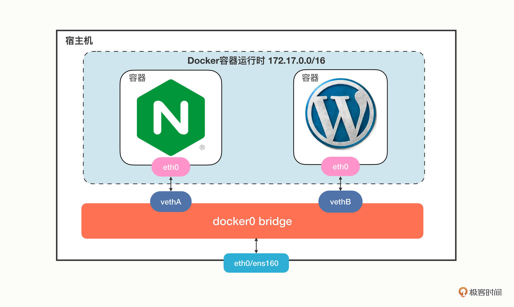
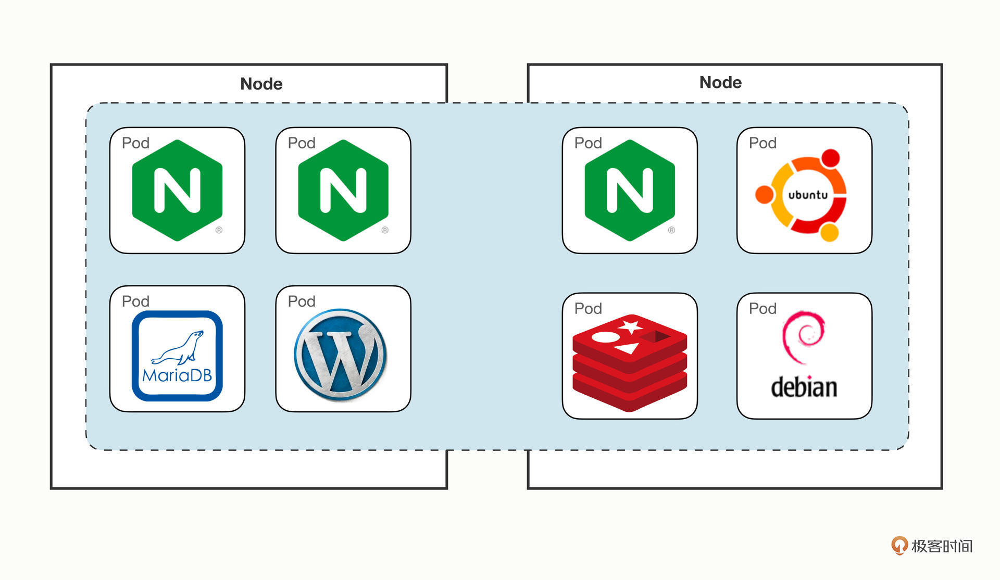
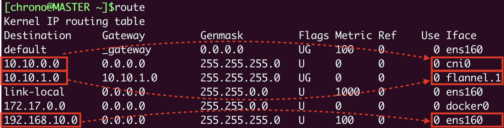
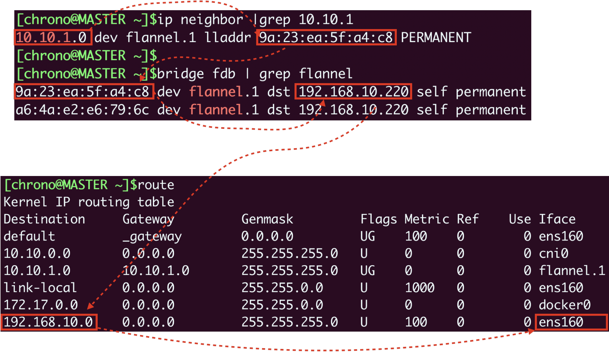
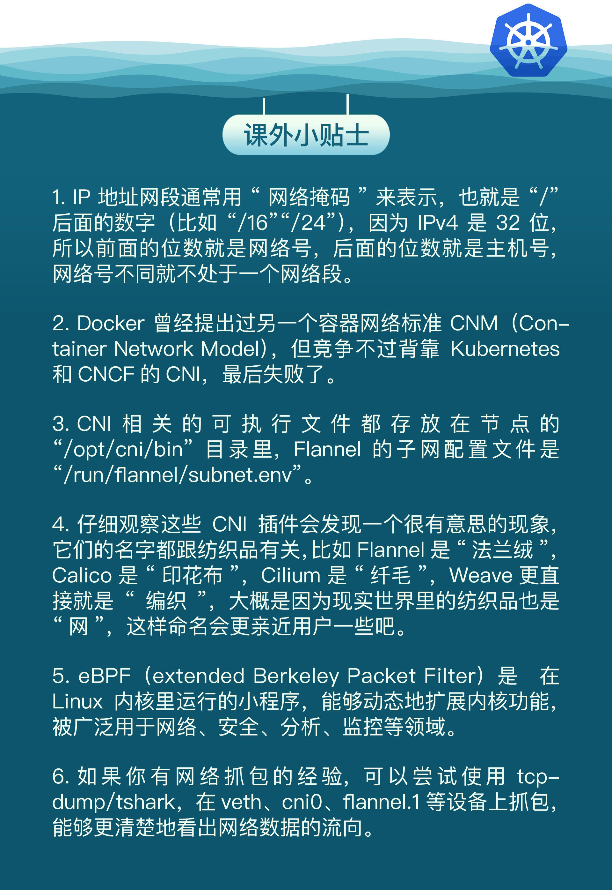

- 00 开篇词 迎难而上，做云原生时代的弄潮儿.md
- 00 课前准备 动手实践才是最好的学习方式.md
- 01 初识容器：万事开头难.md
- 02 被隔离的进程：一起来看看容器的本质.md
- 03 容器化的应用：会了这些你就是Docker高手.md
- 04 创建容器镜像：如何编写正确、高效的Dockerfile.md
- 05 镜像仓库：该怎样用好Docker Hub这个宝藏.md
- 06 打破次元壁：容器该如何与外界互联互通.md
- 07 实战演练：玩转Docker.md
- 08 视频：入门篇实操总结.md
- 09 走近云原生：如何在本机搭建小巧完备的Kubernetes环境.md
- 10 自动化的运维管理：探究Kubernetes工作机制的奥秘.md
- 11 YAML：Kubernetes世界里的通用语.md
- 12 Pod：如何理解这个Kubernetes里最核心的概念？.md
- 13 Job_CronJob：为什么不直接用Pod来处理业务？.md
- 14 ConfigMap_Secret：怎样配置、定制我的应用.md
- 15 实战演练：玩转Kubernetes（1）.md
- 16 视频：初级篇实操总结.md
- 17 更真实的云原生：实际搭建多节点的Kubernetes集群.md
- 18 Deployment：让应用永不宕机.md
- 19 Daemonset：忠实可靠的看门狗.md
- 20 Service：微服务架构的应对之道.md
- 21 Ingress：集群进出流量的总管.md
- 22 实战演练：玩转Kubernetes（2）.md
- 23 视频：中级篇实操总结.md
- 24 PersistentVolume：怎么解决数据持久化的难题？.md
- 25 PersistentVolume + NFS：怎么使用网络共享存储？.md
- 26 StatefulSet：怎么管理有状态的应用？.md
- 27 滚动更新：如何做到平滑的应用升级降级？.md
- 28 应用保障：如何让Pod运行得更健康？.md
- 29 集群管理：如何用名字空间分隔系统资源？.md
- 30 系统监控：如何使用Metrics Server和Prometheus？.md
- 31 网络通信：CNI是怎么回事？又是怎么工作的？.md
- 32 实战演练：玩转Kubernetes（3）.md
- 33 视频：高级篇实操总结.md
- 加餐 docker-compose：单机环境下的容器编排工具.md
- 加餐 谈谈Kong Ingress Controller.md
- 结束语 是终点，更是起点.md
31 网络通信：CNI是怎么回事？又是怎么工作的？
你好，我是Chrono。
到现在，我们对Kubernetes已经非常熟悉了，它是一个集群操作系统，能够管理大量计算节点和运行在里面的应用。不过，还有一个很重要的基础知识我们还没有学习，那就是“网络通信”。
早在“入门篇”的[第6讲]里，我们就简单介绍过Docker的网络模式，然后在“中级篇”的[第17讲]，我们又为Kubernetes安装了一个网络插件Flannel。这些都与网络相关，但也只是浅尝辄止，并没有太多深究。
如果你是一个喜欢刨根问底的人，会不会很好奇：Flannel到底是如何工作的呢？它为什么能够让Kubernetes集群正常通信呢？还有没有其他网络插件呢？
今天我们就来聊一下这个话题，讲讲Kubernetes的网络接口标准CNI，以及Calico、Cilium等性能更好的网络插件。
Kubernetes的网络模型
在学习Kubernetes的网络之前，我们还是要先简单回顾一下Docker的网络知识。
你对Docker的null、host和bridge三种网络模式还有印象吗？这里我重新画了一张图，描述了Docker里最常用的bridge网络模式：

Docker会创建一个名字叫“docker0”的网桥，默认是私有网段“172.17.0.0/16”。每个容器都会创建一个虚拟网卡对（veth pair），两个虚拟网卡分别“插”在容器和网桥上，这样容器之间就可以互联互通了。
Docker的网络方案简单有效，但问题是它只局限在单机环境里工作，跨主机通信非常困难（需要做端口映射和网络地址转换）。
针对Docker的网络缺陷，Kubernetes提出了一个自己的网络模型“IP-per-pod”，能够很好地适应集群系统的网络需求，它有下面的这4点基本假设：
- 集群里的每个Pod都会有唯一的一个IP地址。
- Pod里的所有容器共享这个IP地址。
- 集群里的所有Pod都属于同一个网段。
- Pod直接可以基于IP地址直接访问另一个Pod，不需要做麻烦的网络地址转换（NAT）。
我画了一张Kubernetes网络模型的示意图，你可以看一下：

这个网络让Pod摆脱了主机的硬限制，是一个“平坦”的网络模型，很好理解，通信自然也非常简单。
因为Pod都具有独立的IP地址，相当于一台虚拟机，而且直连互通，也就可以很容易地实施域名解析、负载均衡、服务发现等工作，以前的运维经验都能够直接使用，对应用的管理和迁移都非常友好。
什么是CNI
Kubernetes定义的这个网络模型很完美，但要把这个模型落地实现就不那么容易了。所以Kubernetes就专门制定了一个标准：CNI（Container Networking Interface）。
CNI为网络插件定义了一系列通用接口，开发者只要遵循这个规范就可以接入Kubernetes，为Pod创建虚拟网卡、分配IP地址、设置路由规则，最后就能够实现“IP-per-pod”网络模型。
依据实现技术的不同，CNI插件可以大致上分成“Overlay”“Route”和“Underlay”三种。
Overlay的原意是“覆盖”，是指它构建了一个工作在真实底层网络之上的“逻辑网络”，把原始的Pod网络数据封包，再通过下层网络发送出去，到了目的地再拆包。因为这个特点，它对底层网络的要求低，适应性强，缺点就是有额外的传输成本，性能较低。
Route也是在底层网络之上工作，但它没有封包和拆包，而是使用系统内置的路由功能来实现Pod跨主机通信。它的好处是性能高，不过对底层网络的依赖性比较强，如果底层不支持就没办法工作了。
Underlay就是直接用底层网络来实现CNI，也就是说Pod和宿主机都在一个网络里，Pod和宿主机是平等的。它对底层的硬件和网络的依赖性是最强的，因而不够灵活，但性能最高。
自从2015年CNI发布以来，由于它的接口定义宽松，有很大的自由发挥空间，所以社区里就涌现出了非常多的网络插件，我们之前在[第17讲]里提到的Flannel就是其中之一。
Flannel（https://github.com/flannel-io/flannel/）由CoreOS公司（已被Redhat收购）开发，最早是一种Overlay模式的网络插件，使用UDP和VXLAN技术，后来又用Host-Gateway技术支持了Route模式。Flannel简单易用，是Kubernetes里最流行的CNI插件，但它在性能方面表现不是太好，所以一般不建议在生产环境里使用。
现在还有两个常用CNI插件：Calico、Cilium，我们做个简略的介绍。
Calico（https://github.com/projectcalico/calico）是一种Route模式的网络插件，使用BGP协议（Border Gateway Protocol）来维护路由信息，性能要比Flannel好，而且支持多种网络策略，具备数据加密、安全隔离、流量整形等功能。
Cilium（https://github.com/cilium/cilium）是一个比较新的网络插件，同时支持Overlay模式和Route模式，它的特点是深度使用了Linux eBPF技术，在内核层次操作网络数据，所以性能很高，可以灵活实现各种功能。在2021年它加入了CNCF，成为了孵化项目，是非常有前途的CNI插件。
CNI插件是怎么工作的
Flannel比较简单，我们先以它为例看看CNI在Kubernetes里的工作方式。
这里必须要说明一点，计算机网络很复杂，有IP地址、MAC地址、网段、网卡、网桥、路由等许许多多的概念，而且数据会流经多个设备，理清楚脉络比较麻烦，今天我们会做一个大概的描述，不会讲那些太底层的细节。
我们先来在实验环境里用Deployment创建3个Nginx Pod，作为研究对象：
kubectl create deploy ngx-dep --image=nginx:alpine --replicas=3
使用命令 kubectl get pod 可以看到，有两个Pod运行在master节点上，IP地址分别是“10.10.0.3”“10.10.0.4”，另一个Pod运行在worker节点上，IP地址是“10.10.1.77”：

Flannel默认使用的是基于VXLAN的Overlay模式，整个集群的网络结构我画了一张示意图，你可以对比一下Docker的网络结构：

从单机的角度来看的话，Flannel的网络结构和Docker几乎是一模一样的，只不过网桥换成了“cni0”，而不是“docker0”。
接下来我们来操作一下，看看Pod里的虚拟网卡是如何接入cni0网桥的。
在Pod里执行命令 ip addr 就可以看到它里面的虚拟网卡“eth0”：

你需要注意它的形式，第一个数字“3”是序号，意思是第3号设备，“@if45”就是它另一端连接的虚拟网卡，序号是45。
因为这个Pod的宿主机是master，我们就要登录到master节点，看看这个节点上的网络情况，同样还是用命令 ip addr：

这里就可以看到宿主机（master）节点上的第45号设备了，它的名字是 [email protected]，“veth”表示它是一个虚拟网卡，而后面的“@if3”就是Pod里对应的3号设备，也就是“eth0”网卡了。
那么“cni0”网桥的信息该怎么查看呢？这需要在宿主机（master）上使用命令 brctl show：

从这张截图里，你可以发现“cni0”网桥上有4个虚拟网卡，第三个就是“veth41586979”，所以这个网卡就被“插”在了“cni0”网桥上，然后因为虚拟网卡的“结对”特性，Pod也就连上了“cni0”网桥。
单纯用Linux命令不太容易看清楚网卡和网桥的联系，所以我把它们整合在了下面的图里，加上了虚线标记，这样你就能更清晰地理解Pod、veth和cni0的引用关系了：

使用同样的方式，你可以知道另一个Pod “10.10.0.4”的网卡是 [email protected]，它也在“cni0”网桥上，所以借助这个网桥，本机的Pod就可以直接通信。
弄清楚了本机网络，我们再来看跨主机的网络，它的关键是节点的路由表，用命令 route 查看：

它告诉我们有这些信息：
- 10.10.0.0/24网段的数据，都要走cni0设备，也就是“cni0”网桥。
- 10.10.1.0/24网段的数据，都要走flannel.1设备，也就是Flannel。
- 192.168.10.0/24网段的数据，都要走ens160设备，也就是我们宿主机的网卡。
假设我们要从master节点的“10.10.0.3”访问worker节点的“10.10.1.77”，因为master节点的“cni0”网桥管理的只是“10.10.0.0/24”这个网段，所以按照路由表，凡是“10.10.1.0/24”都要让flannel.1来处理，这样就进入了Flannel插件的工作流程。
然后Flannel就要来决定应该如何把数据发到另一个节点，在各种表里去查询。因为这个过程比较枯燥，我就不详细说了，你可以参考下面的示意图，用到的命令有 ip neighbor、bridge fdb 等等：

Flannel得到的结果就是要把数据发到“192.168.10.220”，也就是worker节点，所以它就会在原始网络包前面加上这些额外的信息，封装成VXLAN报文，用“ens160”网卡发出去，worker节点收到后再拆包，执行类似的反向处理，就可以把数据交给真正的目标Pod了。
使用Calico网络插件
看到这里，是不是觉得Flannel的Overlay处理流程非常复杂，绕来绕去很容易让人头晕，那下面我们就来看看另一个Route模式的插件Calico。
你可以在Calico的网站（https://www.tigera.io/project-calico/）上找到它的安装方式，我选择的是“本地自助安装（Self-managed on-premises）”，可以直接下载YAML文件：
wget https://projectcalico.docs.tigera.io/manifests/calico.yaml
由于Calico使用的镜像较大，为了加快安装速度，可以考虑在每个节点上预先使用 docker pull 拉取镜像：
docker pull calico/cni:v3.23.1
docker pull calico/node:v3.23.1
docker pull calico/kube-controllers:v3.23.1
Calico的安装非常简单，只需要用 kubectl apply 就可以（记得安装之前最好把Flannel删除）：
kubectl apply -f calico.yaml
安装之后我们来查看一下Calico的运行状态，注意它也是在“kube-system”名字空间：

我们仍然创建3个Nginx Pod来做实验：
kubectl create deploy ngx-dep --image=nginx:alpine --replicas=3
我们会看到master节点上有两个Pod，worker节点上有一个Pod，但它们的IP地址与刚才Flannel的明显不一样了，分别是“10.10.219.”和“10.10.171.”，这说明Calico的IP地址分配策略和Flannel是不同的：

然后我们来看看Pod里的网卡情况，你会发现虽然还是有虚拟网卡，但宿主机上的网卡名字变成了 [email protected]，而且并没有连接到“cni0”网桥上：

这是不是很奇怪？
其实这是Calico的工作模式导致的正常现象。因为Calico不是Overlay模式，而是Route模式，所以它就没有用Flannel那一套，而是在宿主机上创建路由规则，让数据包不经过网桥直接“跳”到目标网卡去。
来看一下节点上的路由表就能明白：

假设Pod A“10.10.219.67”要访问Pod B“10.10.219.68”，那么查路由表，知道要走“cali051dd144e34”这个设备，而它恰好就在Pod B里，所以数据就会直接进Pod B的网卡，省去了网桥的中间步骤。
Calico的网络架构我也画了一张示意图，你可以再对比Flannel来学习：

至于在Calico里跨主机通信是如何路由的，你完全可以对照着路由表，一步步地“跳”到目标Pod去（提示：tunl0设备）。
小结
好说了这么多，你应该看到了，Kubernetes的整个网络数据传输过程有大量的细节，非常多的环节都参与其中，想把它彻底弄明白还真不是件容易的事情。
不过好在CNI通过“依赖倒置”的原则把这些工作都交给插件去解决了，不管下层是什么样的环境，不管插件是怎么实现的，我们在Kubernetes集群里只会有一个干净、整洁的网络空间。
我来简单小结一下今天的内容：
- Kubernetes使用的是“IP-per-pod”网络模型，每个Pod都会有唯一的IP地址，所以简单易管理。
- CNI是Kubernetes定义的网络插件接口标准，按照实现方式可以分成“Overlay”“Route”和“Underlay”三种，常见的CNI插件有Flannel、Calico和Cilium。
- Flannel支持Overlay模式，它使用了cni0网桥和flannel.1设备，本机通信直接走cni0，跨主机通信会把原始数据包封装成VXLAN包再走宿主机网卡发送，有性能损失。
- Calico支持Route模式，它不使用cni0网桥，而是创建路由规则，把数据包直接发送到目标网卡，所以性能高。
课下作业
最后是课下作业时间，给你留两个思考题：
- Kubernetes没有内置网络实现，而是用CNI定义了标准接口，这么做的好处在哪里？
- 你对Flannel和Calico这两个网络插件的工作模式有什么样的看法？
欢迎在留言区发言参与讨论，这是最后一节知识点学习课，下节课我们进入回顾总结，曙光就在前方，期待你在马上到来的实操课和视频课中见证自己的成长。下节课见。

© 2019 - 2023 Liangliang Lee. Powered by Vert.x and hexo-theme-book.